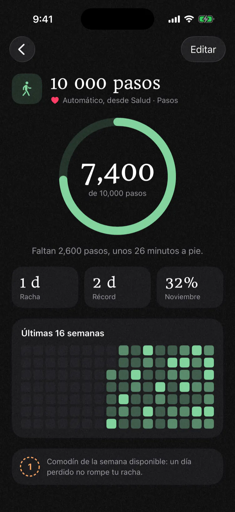

Una app de hábitos que Salud completa por ti
Última actualización: 23 de noviembre de 2026
Camina, y tu hábito de pasos se llena solo. Coutume lee cuatro tipos de datos de Salud para registrar tus hábitos por su cuenta, así que solo tocas para el resto. Gratis, sin cuenta y sin anuncios.

Cuatro hábitos que se registran solos
Pasos, minutos de ejercicio, minutos de atención plena y agua. Vincula un hábito a uno de ellos, como 10.000 pasos u 8 vasos de agua, y su anillo se llena a medida que Salud cuenta.
El mismo total que la app Salud
Coutume usa el mismo total diario que Salud, que cuenta tu iPhone y tu Apple Watch una sola vez. Los datos del Apple Watch pueden llegar a tu iPhone un poco más tarde: cada vez que abres Coutume, vuelve a leer los últimos siete días y se pone al día.
Junto a los hábitos que tocas
Tus hábitos de Salud conviven con los demás en tu día: leer 20 páginas, meditar, acostarte a tu hora. Un toque registra esos; Salud registra el resto.

Solo lectura, y privado
Coutume nunca escribe en Salud, y nunca lee nada que no hayas permitido. Los totales diarios se quedan en tu iPhone y en tu iCloud privado: nunca nos llegan ni se usan para publicidad. Puedes cambiar lo que lee Coutume cuando quieras en Ajustes › Privacidad y seguridad › Salud › Coutume.

Coutume llega pronto a la App Store, para iPhone: gratis, sin cuenta, sin anuncios y sin suscripción.
Guías relacionadas
- Seguimiento de agua
Cuenta tus vasos de agua con un toque, o deja que Salud lo haga
- Widget de hábitos
Los anillos del día en tu pantalla de inicio y tu pantalla bloqueada
- Alternativa a Streaks
Las mejores alternativas a Streaks, la app de hábitos de pago para dispositivos Apple
- Ideas de hábitos
40 ideas de buenos hábitos por crear y malos por dejar
Preguntas
Consulta las preguntas frecuentes o visita el soporte.